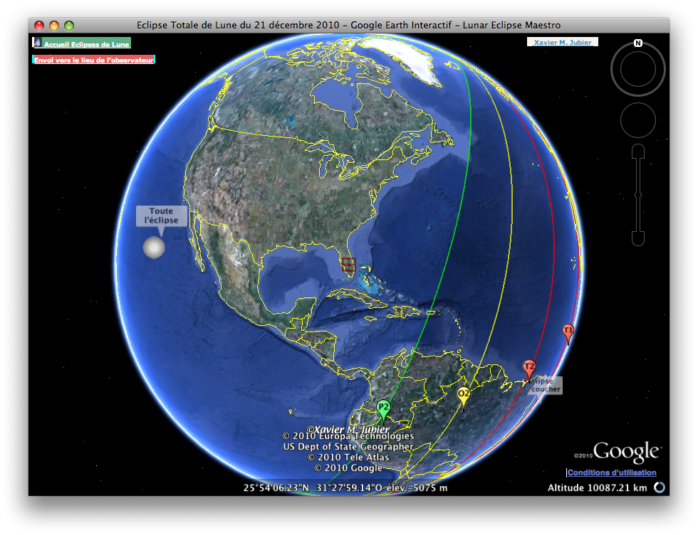
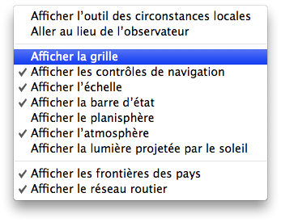

Fenêtre interactive Google Earth
La fenêtre affiche l’éclipse comme si vous étiez dans Google Earth. A l’ouverture, la vue est positionnée au point de plus grande éclipse.
La visualisation utilise le moteur de mon outil Internet Catalogue de Cinq Millénaires d’Eclipses de Lune (5MCLE) et nécessite par conséquent un accès Internet.
-
Dans le menu Affichage sélectionnez Eclipse dans Google Earth…
-
Si vous n’avez pas encore installé le plug-in Google Earth, alors vous aurez la possibilité de le faire (voir l’écran d’installation).


Un menu contextuel est disponible à l’aide d’un clic droit; celui-ci vous permet de sélectionner quelques options:
- Afficher l’outil des circonstances locales - Affiche ou masque l’outil des circonstances locales. Actif par défaut.
- Aller au lieu de l’observateur - Vole 10 kilomètres au-dessus du lieu courant de l’observateur.
- Afficher la grille - Affiche ou masque la grille. Masquée par défaut.
- Afficher les contrôles de navigation - Affiche ou masque les contrôles de navigation. Affiché par défaut.
- Afficher l’échelle - Affiche ou masque l’échelle. Affichée par défaut.
- Afficher la barre d’état - Affiche ou masque la barre d’état. Affichée par défaut.
- Afficher le planisphère - Affiche ou masque le planisphère. Masqué par défaut.
- Afficher l’atmosphère - Affiche ou masque l’atmosphère bleue qui entoure la terre. Actif par défaut.
- Afficher la lumière projetée par le Soleil - Affiche ou masque la lumière projetée par le Soleil à la surface du globe terrestre. Actif par défaut.
- Afficher les frontières des pays - Affiche ou masque les frontières des pays. Actif par défaut.
- Afficher le réseau routier - Affiche ou masque les réseaux routiers. Actif par défaut.
|